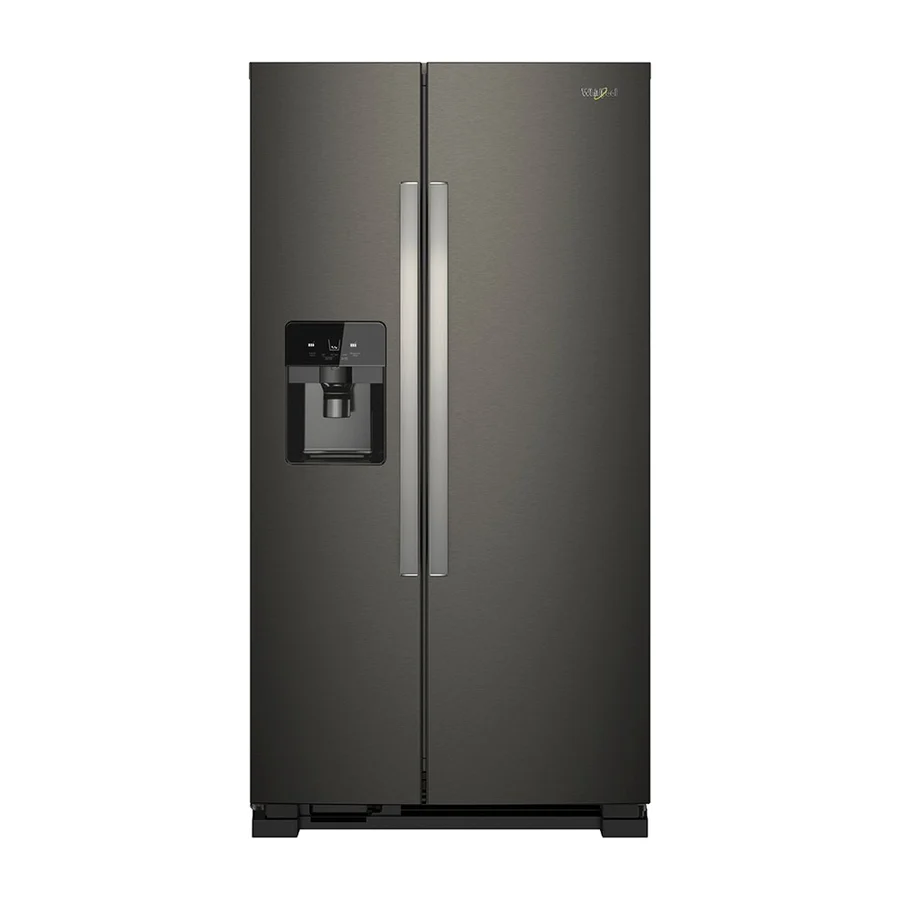

Imágenes de referencia de equipos Whirlpool.
Qué reparamos
Modelos y tipos de nevera Whirlpool que atendemos a domicilio en Quito:
- Side by Side (dos puertas verticales)
- French Door (puertas dobles arriba y cajón de congelador abajo)
- Congelador superior (Top Mount)
- Congelador inferior (Bottom Mount)
- Modelos con dispensador de agua y fábrica de hielo
- Modelos con compresor inverter
Fallas comunes de nevera Whirlpool
Cada falla tiene su propia página con causas, qué revisar y cuándo llamar.
- La nevera no enfría Urgente
Falla del ventilador del evaporador, escarcha que tapa la circulación de aire, sensor de temperatura, tarjeta de control o compresor. - El congelador se llena de escarcha Revisar pronto
Falla del sistema de descongelación (resistencia, termostato de deshielo o tarjeta), o empaque de la puerta que no sella. - Gotea agua dentro de la nevera Revisar pronto
Desagüe de descongelación tapado o congelado, o bandeja de drenaje en mal estado. - Hace ruido o zumbido fuerte Revisar pronto
Ventilador con hielo o desgastado, compresor que arranca con dificultad, o la nevera mal nivelada. - El dispensador no saca agua Vigilar
Filtro de agua vencido, manguera congelada o válvula de entrada de agua. - No hace hielo o hace poco Vigilar
Fábrica de hielo congelada, válvula de agua, sensor o temperatura del congelador fuera de rango. - Se enciende la luz del filtro o suena una alarma Vigilar
Aviso de cambio de filtro o puerta que no cierra bien. - Se apaga y prende sola, o salta el breaker Urgente
Variaciones de voltaje, compresor con falla de arranque o tarjeta de control. - Huele mal por dentro Vigilar
Alimentos derramados, drenaje sucio o filtro de olores saturado. - El congelador no congela Urgente
Ventilador o evaporador con escarcha, sensor de temperatura, tarjeta de control o compresor. - La puerta no cierra bien o el empaque no sella Vigilar
Empaque (goma) deformado o sucio, bisagras flojas, refrigeradora mal nivelada o cajones mal puestos. - La luz interior no enciende Vigilar
Foco o LED quemado, interruptor de la puerta o conexión suelta. - El agua o el hielo salen con mal sabor u olor Vigilar
Filtro de agua vencido, agua estancada en la manguera o depósito de hielo sucio. - El compresor no arranca o se calienta mucho Urgente
Relé de arranque, protector térmico, tarjeta de control, voltaje bajo o compresor con falla.
Servicios para nevera Whirlpool en Quito
Reparar, dónde reparar, cuánto cuesta y más:
- Reparar la nevera Whirlpool en Quito
- Dónde reparar la nevera Whirlpool en Quito
- Cuánto cuesta reparar la nevera Whirlpool en Quito
- Arreglo de neveras Whirlpool en Quito
- Técnico de neveras a domicilio en Quito
- Técnico de neveras Whirlpool a domicilio en Quito
- Técnico de neveras Whirlpool urgente en Quito
- Reparación de neveras en Quito
- Reparación de neveras Whirlpool en el centro de Quito
- Reparación de neveras Whirlpool en el norte de Quito
- Reparación de neveras Whirlpool en el sur de Quito
- Reparación de neveras Whirlpool en los valles de Quito
- Reparación de neveras Whirlpool French Door en Quito
- Reparación de neveras Whirlpool Side by Side en Quito
- Mantenimiento de neveras Whirlpool en Quito
- Cambio de filtro de agua de nevera Whirlpool en Quito
- Centro de servicio de neveras Whirlpool en Quito
- Cotizar la reparación de neveras Whirlpool en Quito
- ¿Nevera o refrigeradora Whirlpool? Es lo mismo
- Repuestos para neveras Whirlpool en Quito
- Servicio técnico de neveras Whirlpool en Quito
Qué hacemos en la visita
Vamos a tu casa, probamos la nevera en su lugar de uso, identificamos la causa y te explicamos qué tiene antes de tocar nada.
- Diagnóstico de la falla
- Costo confirmado antes de reparar
- Reparación y prueba de funcionamiento
- Recomendaciones para que no se repita
Mantenimiento para que la nevera dure más
- Limpia las rejillas y el polvo de la parte trasera o inferior cada 6 meses.
- Revisa que el empaque (goma) de las puertas selle: prueba con una hoja de papel.
- Cambia el filtro de agua cada 6 meses o cuando se encienda el aviso.
- Deja unos centímetros de separación con la pared para que el calor salga.
- No sobrecargues la nevera: el aire debe circular entre los alimentos.
- Conecta la nevera a una toma firme y, si hay cortes de luz, usa un protector de voltaje.
Antes de llamar: seguridad y datos
Seguridad primero
Desconecta la refrigeradora antes de mover, limpiar o intentar abrir cualquier panel trasero. Si huele a quemado, desenchúfala y no la vuelvas a conectar.
Qué enviarnos por WhatsApp
Para orientarte más rápido, envíanos marca y modelo (la etiqueta suele estar dentro, en el costado o en el techo del compartimento), cuánto tiempo lleva con la falla y si el congelador enfría o no. Una foto de la etiqueta y un video corto de la falla ayudan mucho.
Particularidades de Quito
Quito tiene cortes y bajones de voltaje ocasionales; un protector de voltaje con retardo ayuda a cuidar el compresor y la tarjeta electrónica.
Dónde atendemos: nevera Whirlpool por zona
Elige tu barrio para ver el servicio a domicilio de nevera Whirlpool en tu zona:
Norte de Quito
Centro de Quito
Sur de Quito
Valles de Quito
Guías relacionadas
- Cortes de luz y variaciones de voltaje: cómo proteger tus electrodomésticos
- ¿Reparar o reemplazar tu electrodoméstico Whirlpool?
- Temperatura ideal de la nevera y el congelador Whirlpool
- Cómo limpiar la nevera Whirlpool por dentro y por fuera
- Voltaje en Ecuador: 110 V, 220 V y tus electrodomésticos Whirlpool
- Cómo encontrar el modelo y la etiqueta de tu electrodoméstico Whirlpool
- Cómo proteger tus electrodomésticos de bajones y picos de voltaje
- Cuánto cuesta reparar un electrodoméstico Whirlpool en Quito
Preguntas frecuentes
¿Cuánto tarda una reparación de nevera Whirlpool?
Depende de la falla. Muchas reparaciones se hacen en la misma visita; si hay que conseguir una pieza, te avisamos el plazo antes de empezar.
¿Reparan neveras Side by Side y French Door?
Sí. Atendemos neveras Whirlpool de dos puertas, French Door y de congelador superior o inferior.
¿Por qué mi nevera Whirlpool no enfría pero el congelador sí?
Normalmente el aire frío no está llegando a la parte de abajo: ventilador, escarcha o sensor. Es una de las fallas más comunes.
¿Cada cuánto debo cambiar el filtro de agua?
Cada 6 meses, o antes si el agua sale lenta o con mal sabor.
¿Vale la pena reparar una nevera vieja?
Si la falla es de una pieza accesible, casi siempre sí. Si el compresor está dañado y el equipo es muy viejo, te explicamos las opciones con honestidad.
¿Dan garantía por la reparación?
Pregunta por la garantía al coordinar la visita: te confirmamos por WhatsApp las condiciones de la reparación antes de empezar.